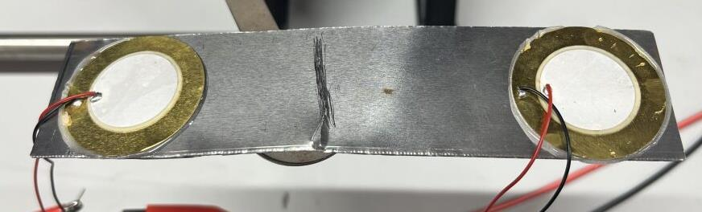
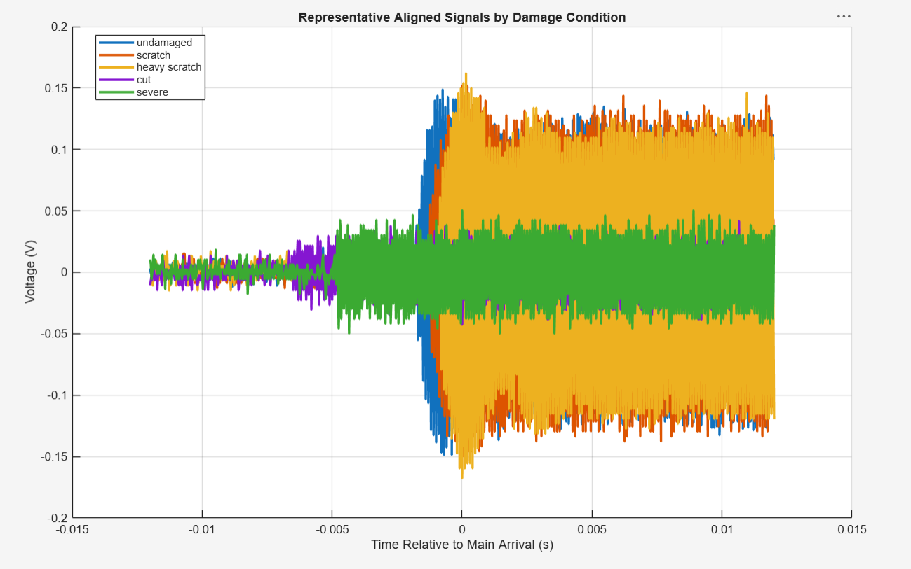
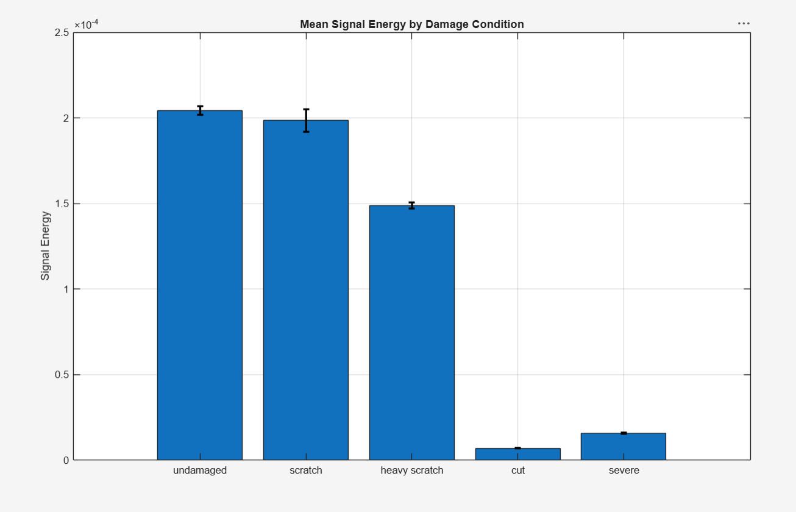
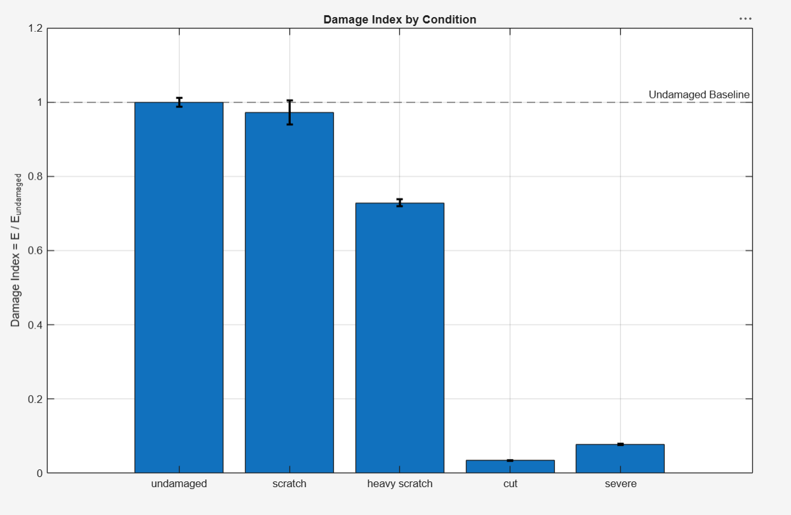

Back to projects
Experimental Systems
Piezoelectric Structural Health Monitoring of Metal Plates
An experimental sensing system that transmits guided waves between bonded
piezoelectric transducers and measures signal attenuation to identify damage
in aluminum plates.
Experimental setup
Active sensing across a metal plate
- Bonded a transmitting and receiving piezoelectric transducer to aluminum test plates.
- Drove the actuator with a 50 kHz sine burst and captured a 5 ms response on an oscilloscope.
- Tested undamaged, light-scratch, heavy-scratch, single-cut, and multiple-cut conditions.
- Exported each waveform to MATLAB for repeatable processing and comparison.
Piezoelectric SensingMATLABSignal AnalysisNon-Destructive Testing


Damage progression
Controlled changes to the transmission path
Damage was introduced in stages between the two sensors so each new waveform
could be compared with the undamaged baseline. Surface scratches produced
relatively small changes, while cuts through the plate strongly interrupted
the guided-wave path.
Signal processing
Aligning each response before comparison
The MATLAB workflow removed DC offset, aligned signals to the baseline using
cross-correlation, and calculated signal energy, peak amplitude, and RMS
voltage. Statistical outliers were removed before the condition averages
were compared.


Key result
Energy was the clearest damage indicator
The light scratch changed signal energy by roughly 3%, while the heavy
scratch produced a moderate reduction of about 27%. A single cut reduced
energy by approximately 96%, and the multiple-cut condition by about 92%.
The results show that small surface damage was difficult to distinguish from
baseline variation, but structural cuts created a clear and repeatable loss
in transmitted energy.
Conclusion
A practical proof of concept
Piezoelectric guided-wave monitoring successfully separated severe structural
damage from the undamaged condition without disassembling the specimen. The
experiment also showed that response is path-dependent: damage location and
geometry matter, so severity is not strictly proportional to signal loss.
Future work includes broader frequency testing, additional sensors, improved
coupling control, composite specimens, and more advanced signal processing.
